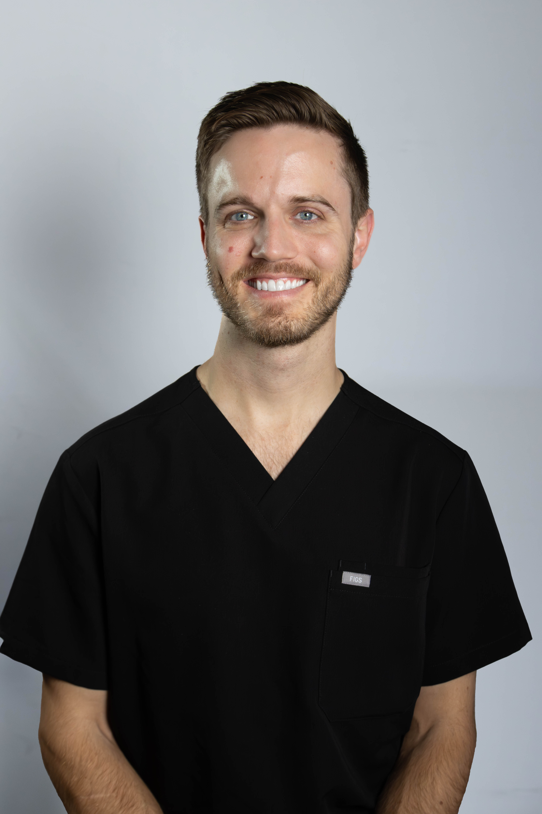

In mid-2023, Dr. Phillip Platt placed his first Invisalign case with zero prior clear aligner experience. No ortho background. No associate who handled the “hard cases.” Just a general dentist in Rogers, Arkansas, who decided it was time to figure it out.
What followed wasn’t a straight line — but it was faster than he expected. He found Molis Coaching, committed fully, and built systems that actually held up in a real practice. Today he’s a Faculty member and sits on the ClinCheck Support Team and Curriculum Review Panel. In early 2026, Align Technology named him an Invisalign Speaker.
The credential that matters most to him isn’t on any of those lists. It’s that he remembers what the learning curve felt like — and he teaches from that place.
2-hour lecture format. 10–20 doctors. Built for GPs who want a clear path from zero to consistent Invisalign production.
Get in Touch